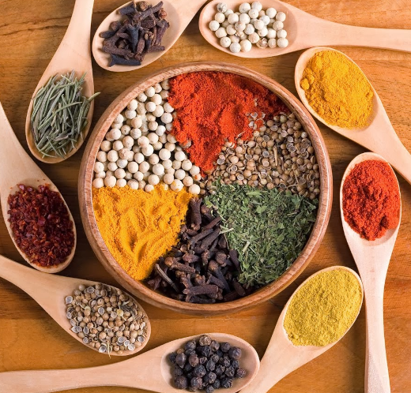

Pakistani cuisine (Urdu: پاکستانی پکوان, romanized: pākistānī pakwān) can be characterized by a blend of various regional cooking traditions from South Asia, Central and Western Asia, as well as elements from its Mughal legacy. The country's various cuisines are derived from its ethnic and cultural diversity.
Pakistani cuisine is based on Halal principles, which forbids pork and alcohol consumption in accordance with Sharia, the religious laws of Islam.
Elements:
Pakistani dishes are known for having aromatic and sometimes spicy flavours.
Some dishes contain liberal amounts of oil, which contribute to a richer, fuller mouthfeel and flavour.
Brown Cardamom, Green Cardamom,
Cinnamon, Cloves,
Nutmeg, Mace,
and Black pepper are the most commonly used spices in the making of a wide variety of dishes throughout Pakistan.
Cumin Seeds, Chili Powder,
Turmeric, and Bay Leaves are also very popular.
In the Punjab province, spice blends are characterized by their use of coriander powder.
Garam masala (a mixture of aromatic spices) is a popular blend of spices used in several Pakistani dishes.
